|
|
Inspecting assets
Upon navigating to a specific asset (Glossary artifact, model asset, quality rule or policy asset), the asset page is displayed. There are several common features on this page which are common to all types of asset:
- Governance Score
- Actions
- Comments
- Status
- Asset Views
Governance Score
The Governance Score is a percentage score, calculated for each asset, based on a set of metrics established by the data governance program of your organization:
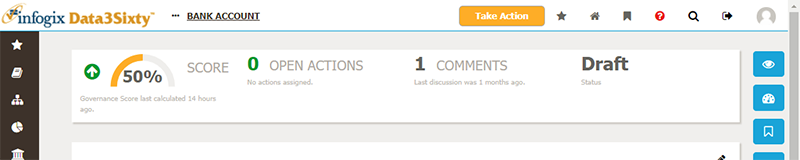
These metrics are independently configurable for each different asset type. For example, business term, application, and vendor artifacts can each have their own set of metrics to score how effectively the assets are being governed.
You can click on the Governance Score to expand the panel to show the details of how the score was calculated:
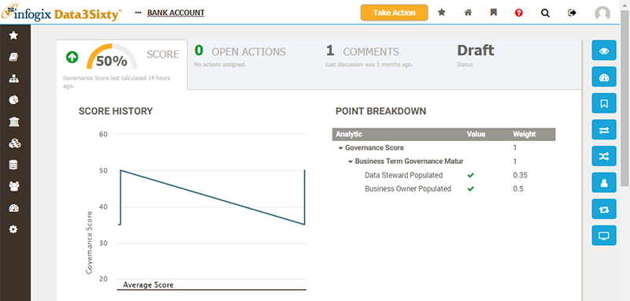
You can see which specific items need to be populated along with the associated score. The average score is displayed for the artifact, along with the history of how the score has changed over time. Scores may increase or decrease based on changes to roles and responsibilities, or additional metric rules being added or removed.
Open Actions
If you have any open actions you need to attend to for the chosen asset, this will be called out next to the Governance Score. For example, you may be required to approve an action by another user related to the asset:
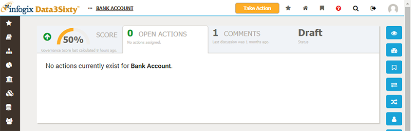
Comments
The Comments count will indicate whether users are discussing this particular asset, and can be clicked to expand and view the discussion:
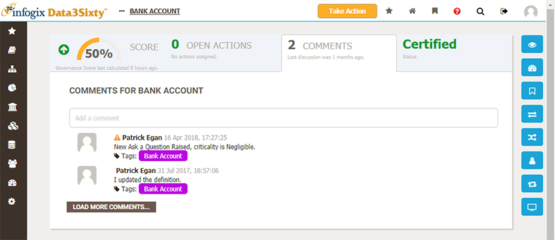
Status
The Status is displayed prominently at the top of the screen and will be one of the following:
- Draft: initial status of an asset
- Under Review: status once the asset has been accepted by an approving council
- Certified: status once the asset definition has been completed and granted final approval
If you have approval rights for an asset, a link will be provided to allow you to approve the item directly from this location.
Asset Views
By default, a definition view is shown for the chosen asset. A number of options down the right-hand side of the page allow you to view different aspects of the asset:
Audit
The Audit view is available for all asset types and provides a list of all modifications made to the asset over its lifetime:
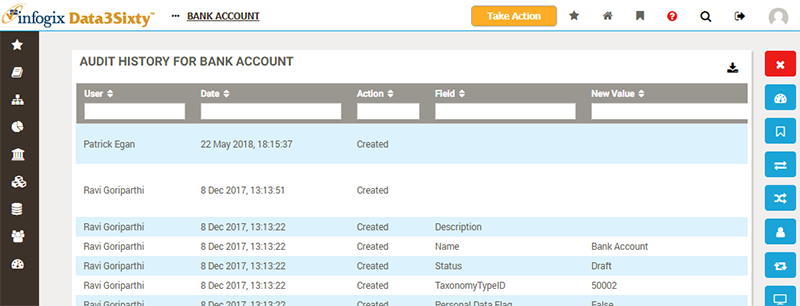
Hierarchy Diagram
The Hierarchy Diagram is available for Models only, and displays the model structure in diagram form, rather than the default tree view:
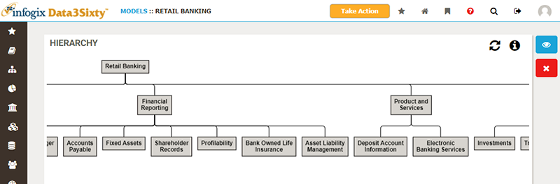
Please refer to the topic Browsing models for more details.
Dashboards
The Dashboards view provides a list of available report dashboards to display for the asset:
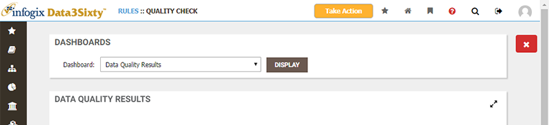
Choose a dashboard from the drop-down list and click Display. The dashboards available will vary depending on the asset you are viewing and will be customized for your own implementation of the application.
Followers
The Followers view is available for Artifacts , Model assets and Quality rules, and provides a list of users who are watching the asset:
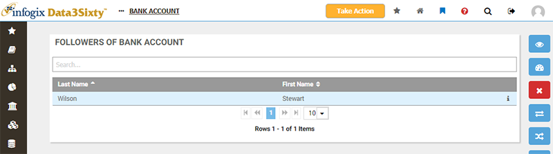
Please refer to the topic Following assets for more details.
Impact
The Impact view is available for Artifacts, Model assets and Quality rules, allowing you to view the relationships to other assets, and assess the impact of making any changes to the chosen asset:
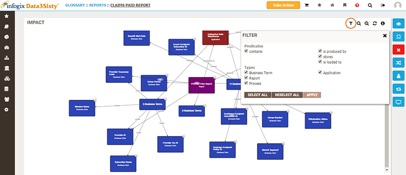
Please refer to the topic Performing impact analysis for more details.
Lineage
The Lineage view is available for Artifacts, Model assets and Quality rules, allowing you to track the lifecycle of assets and understand the relationship between various objects stored in the system:
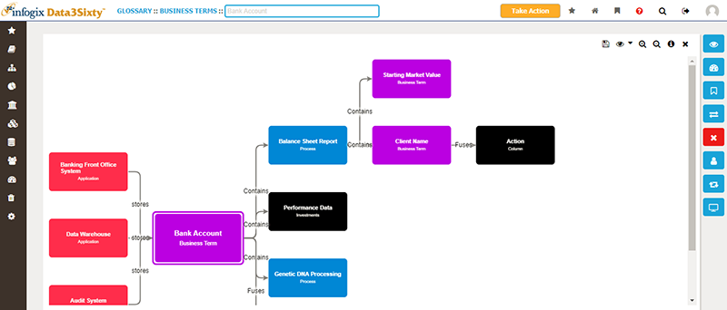
Please refer to the topic Inspecting lineage for more details.
Ownership
The Ownership view is available for Artifacts, Model assets and Quality rules, allowing you to establish ownership of assets, with owners taking responsibility for the accuracy and quality of the assets that they own.
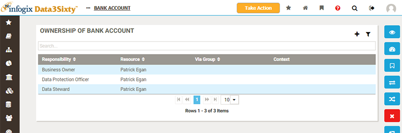
Please refer to the topic Assigning ownership of assets for more details.
Relations
The Relations view is available for Artifacts, Model assets, Policy assets and Quality rules, allowing you to relate business terms to applications, reports, processes, policies and each other, in order to visualize and understand how changes to one asset would impact others.
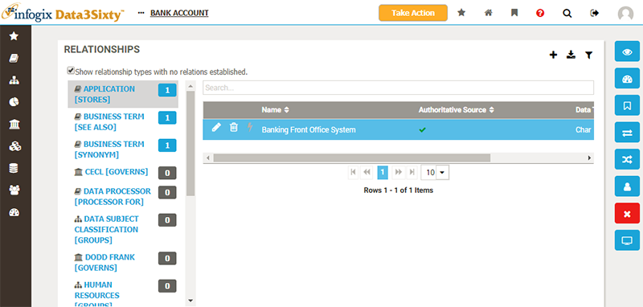
Please refer to the topic Defining relationships between assets for more details.
Workflow Monitor
The Workflow Monitor is available for Artifacts, Model assets, Policy assets and Quality rules, allowing you to track any outstanding workflows which relate to processes you have either initiated (eg. proposing a new business term) or are responsible for progressing (eg. approving or rejecting modifications to assets):
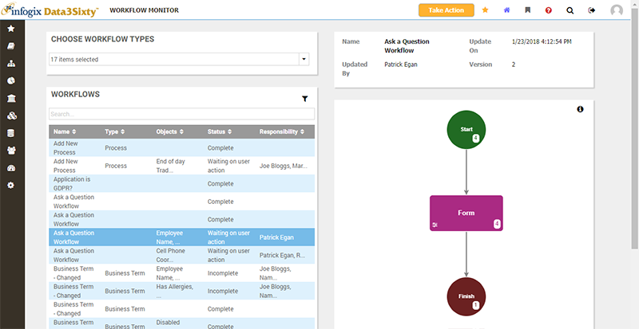
Please refer to the topic Following workflows for more details.